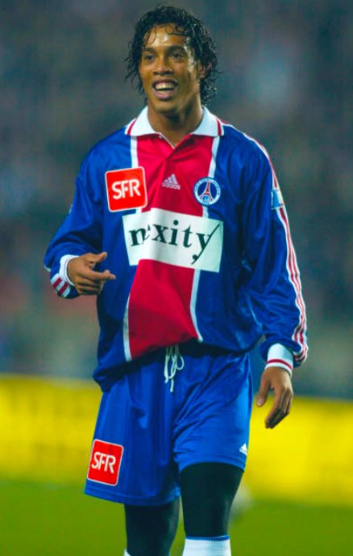
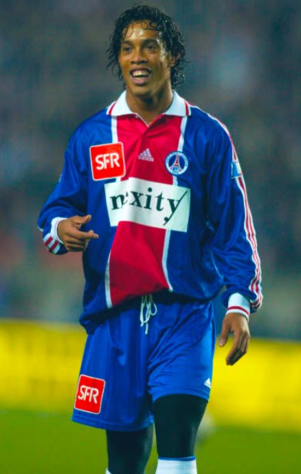

Biografia:
Ronaldo de Assis Moreira nació en Porto Alegre, Estado de Río Grande do Sul, Brasil el 21 de marzo de 1980, más conocido como Ronaldinho o Ronaldinho Gaúcho, es un exjugador de fútbol brasileño nacionalizado español. Es mundialmente reconocido como uno de los talentos más grandes en la historia de dicho deporte. Es hijo de João de Assis Moreira, y su representante fue su hermano Roberto de Assis Moreira. Su carrera como futbolista cubrió algo más de veinte años..
Debutó como futbolista profesional en el Club Grêmio de Porto Alegre, pero desarrolló gran parte de su carrera futbolística en Europa, donde jugó en el Paris Saint-Germain, F.C. Barcelona y A.C. Milan. Se dio a conocer principalmente en el club español, equipo en el que permaneció durante cinco temporadas y recibió el reconocimiento mundial por parte de la prensa, jugadores y varios organismos deportivos. Destaca por su gran técnica y calidad a la hora de controlar el balón, así como también, por la precisión en sus pases, y los regates. Es conocido en el medio futbolístico por sus jugadas, entre las que se destaca el autopase, la vaselina, la espaldinha, la bicicleta o la cola de vaca.
 


La FIFA le destacó como el mejor jugador del mundo, luego de recibir el premio al Jugador Mundial de la FIFA en 2004 y 2005. Ronaldinho aparece en la lista FIFA 100, que incluye a los 125 mejores jugadores de todos los tiempos.
La prestigiosa revista francesa France Football le concedió el Balón de Oro en 2005, premio que le acreditaba como el mejor de Europa, mientras que la revista británica World Soccer le otorgó el premio World Soccer al mejor jugador del mundo en 2004 y 2005. La misma revista le declaró mejor futbolista mundial de la primera década del siglo XXI.
El 6 de febrero de 2013 completó 100 partidos con la Selección de fútbol de Brasil,10 con la que ganó las tres principales competiciones a nivel de selecciones: la Copa Mundial de Fútbol de 2002, la Copa América de 1999 y la Copa FIFA Confederaciones 2005. Ese mismo año, Ronaldinho se convirtió en el sexto futbolista de la historia en ganar la UEFA Champions League y la Copa Libertadores, tras alcanzar este último, con el Atlético Mineiro.
El 16 de enero de 2018, Ronaldinho anunció su retiro del fútbol profesional de manera oficial a sus 37 años, con lo cual finalizó una dinastía del máximo expositor del llamado Jogo Bonito. Se retiró como el único jugador en la historia capaz de haber obtenido Copa del Mundo, UEFA Champions League, Copa Libertadores y Balón de Oro. El 17 de octubre de 2019 jugó un partido amistoso en el Estadio Nemesio Camacho El Campín entre Independiente Santa Fe y Atlético Nacional celebrando la despedida de Ronaldinho.
Trayectoria Musical